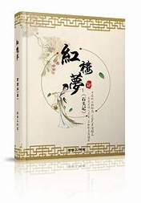

《红楼梦》，中国古典四大名著之首，清代作家曹雪芹创作的章回体长篇小说，又名《石头记》《金玉缘》。
此书分为120回“程本”和80回“脂本”两种版本系统，程本为程伟元排印的印刷本，脂本为脂砚斋在不同时期抄评的早期手抄本，
脂本是程本的底本。《红楼梦》新版通行本前80回据脂本汇校，后40回据程本汇校，署名“曹雪芹著，无名氏续，程伟元、高鹗整理”。
作者尚有较大争议，自述写作目的是为平生所见奇女子扬名立传。小说以贾、史、王、薛四大家族的兴衰为背景，以富贵公子贾宝玉为视角，
描绘了一批举止见识出于须眉之上的闺阁佳人们的人生百态，展现了正邪两赋有情人的人性美和悲剧美，可以说是一部从各个角度展现女性美的史诗。
《红楼梦》是一部具有世界影响力的人情小说作品，举世公认的中国古典小说巅峰之作，....了解更多